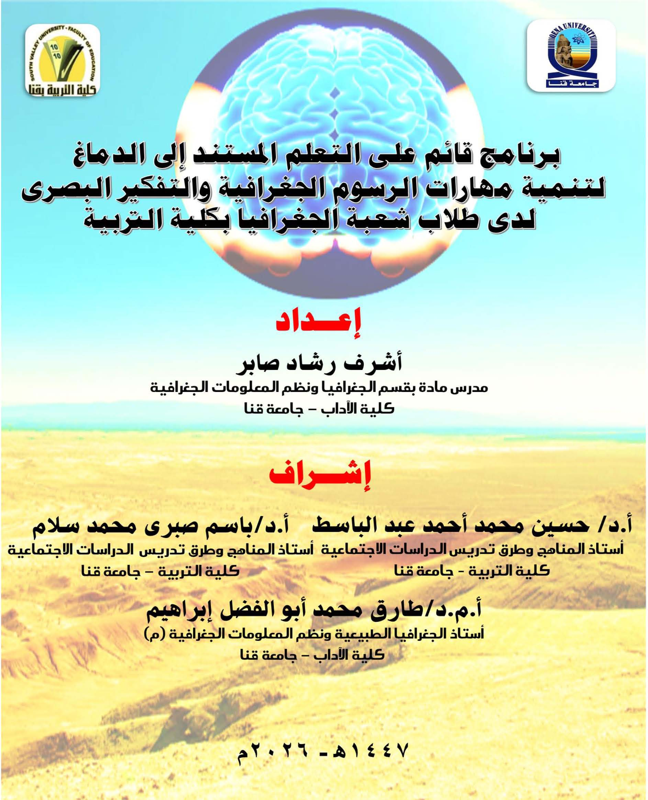

برنامج قائم على التعلم المستند إلى الدماغ لتنمية مهارات الرسوم الجغرافية والتفكير البصرى

إعداد الباحث: أشرف رشاد صابر
إشراف: أ.د/ حسين عبد الباسط - أ.د/ باسم صبرى - أ.م.د/ طارق أبو الفضل
الجهة: قسم المناهج وطرق التدريس - كلية التربية - جامعة قنا
تسجيل بيانات الطالب
يرجى إدخال بياناتك بدقة للمتابعة